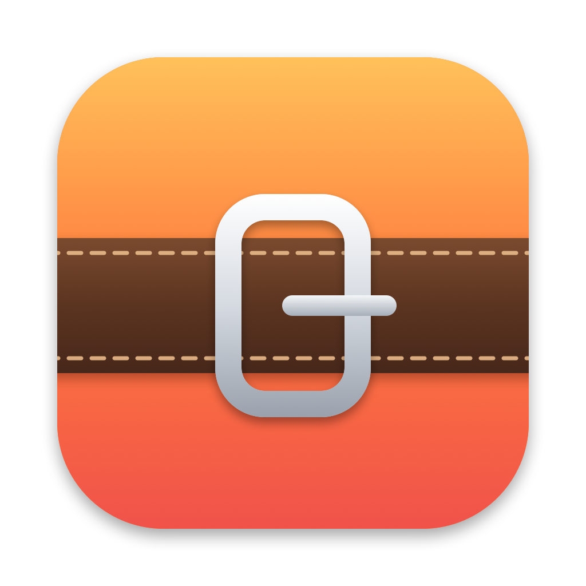

Mac Belt
Small Mac tools in one menu bar icon. Switch on only the ones you need.
- Free forever
- Open source (MIT)
- No tracking
- No account
Gadgets
Awake
Keep your Mac from sleeping for 15 minutes, 8 hours, forever, or while an app is open.
Instead of Amphetamine, LungoClipboard
Searchable clipboard history that spots OTPs, passwords and API keys, keeps them off disk and wipes them after a minute.
⌃⌘V · instead of Paste, MaccyMic Mute
Mutes the microphone itself, so it works in Zoom, Meet, Teams, Discord and the browser at once. A red sign shows while muted.
⌃⌥M · instead of Mic Drop, MuteMeDrop Shelf
Shake the cursor while dragging files to park them on a floating shelf, then drag them off where they belong.
⌃⌥S · instead of Dropover, YoinkText Grab
Drag a box over any text on screen, even in images, videos or PDFs, and it's copied. Reads QR codes too. All on your Mac.
⌃⌥T · instead of TextSniperA gadget that's off uses no CPU and asks for no permissions.
Install
git clone https://github.com/Animesh0764/mac-belt.git cd mac-belt && make install
brew tap Animesh0764/tap brew trust --formula Animesh0764/tap/mac-belt brew install mac-belt mac-belt
Needs macOS 14 or newer and Xcode or the Command Line Tools (xcode-select --install). Mac Belt is built on your Mac, so Gatekeeper doesn't block it and you can read every line first. See the README for details.
Private by design
- Mac Belt makes no network requests. Everything runs on your Mac.
- No analytics, no crash reporting, no account.
- Detected secrets on the clipboard live in memory only. Text Grab's screenshot is never saved.
- Settings are plain JSON files you can read, edit or delete.
Support
Mac Belt is free and always will be. If it saved you from buying an app, consider buying me a coffee (or chai) through GitHub Sponsors, or UPI to singh.animesh.1@superyes. Starring the repo or telling a friend helps just as much.